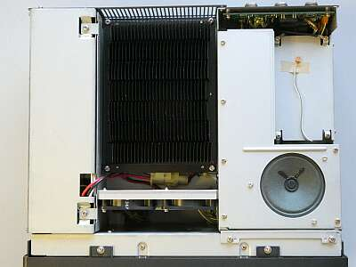
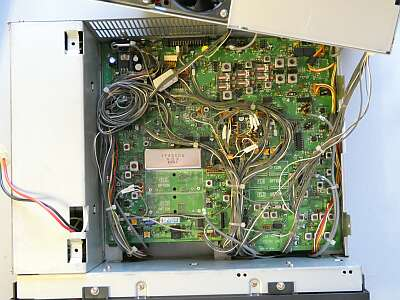
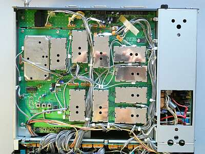

 |
上蓋（上ケース）を開いた状態です
黒いヒートシンクは、ファイナル部
ファン2個で強制空冷される仕組みです
右のシールド・ケースの中は、ＬＰＦ部
左は、電源部
こちらにも強制空冷のファンが1個用意されています
こうしてここだけを見ると、極めてシンプルに見えます |
 |
シャーシ上面
ファイナル部・ＬＰＦ部を持ち上げた下にある基板です
ＴＸ／ＲＸユニットと称されているものです
ＩＦフィルタは、オプションのCW：５００Hｚナローフィルタを実装してあります
ＢＷＣ機能のための９ＭＨｚ台のフィルタ組み入れはありません
送信モニタ・ユニットも、オプションです（ＪＳＴ-２４５も）
ＣＰＵユニットは、フロントパネル裏、下シールドの中です |
 |
下蓋（下ケース）を開いた状態です
シンセサイザー・ユニットと称されているものです
本機ですが、例えばＪＳＴ-１３５のような、ここまでのＪＲＣ製品によく見られたマザーボードにユニット基板を立てる方式ではありません
基板右は、電源部です
ＲＦ系ですが、都合２枚の基板でエキサイター完成という形です |
| ＪＳＴ-２４５Dのページで、分解した様子をもう少し写してご紹介しています |
|
ケース・外観以外、内部に錆びほか異常は見当たりません
年期のわりに、保存状態は非常にいいものでした |
さて、最後はお決まりのスペック紹介
まず受信感度
ＳＳＢ ０．２μＶ Ｓ/Ｎ １０ｄｂ
ＡＭ ０．７μＶ Ｓ/Ｎ １０ｄｂ（これは優秀かと）
１４．２００ＭＨｚでこのような値でした
送信パワーについて
各アマチュアバンドにおいて、１１０Wでほとんど変わらず
いずれも、オリジナル・スペックは、十分に満足しています
アンテナをつないだ第一印象は「静か」です |